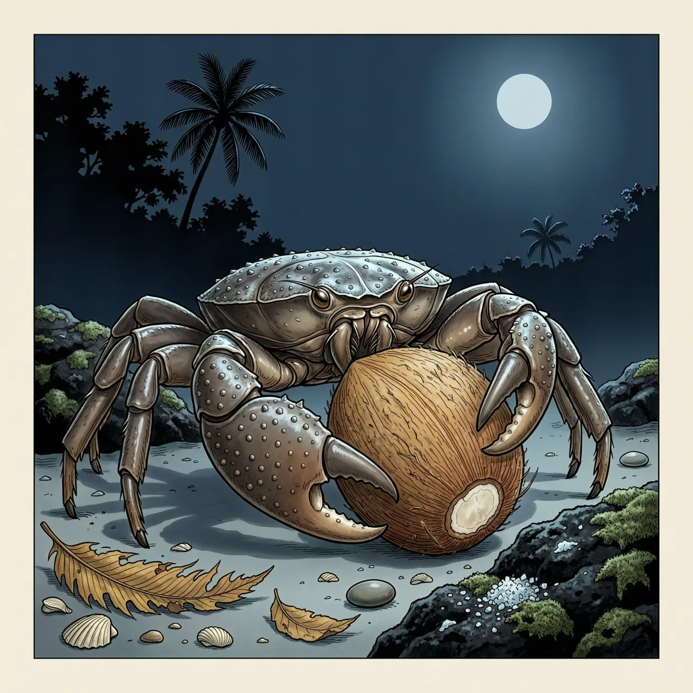
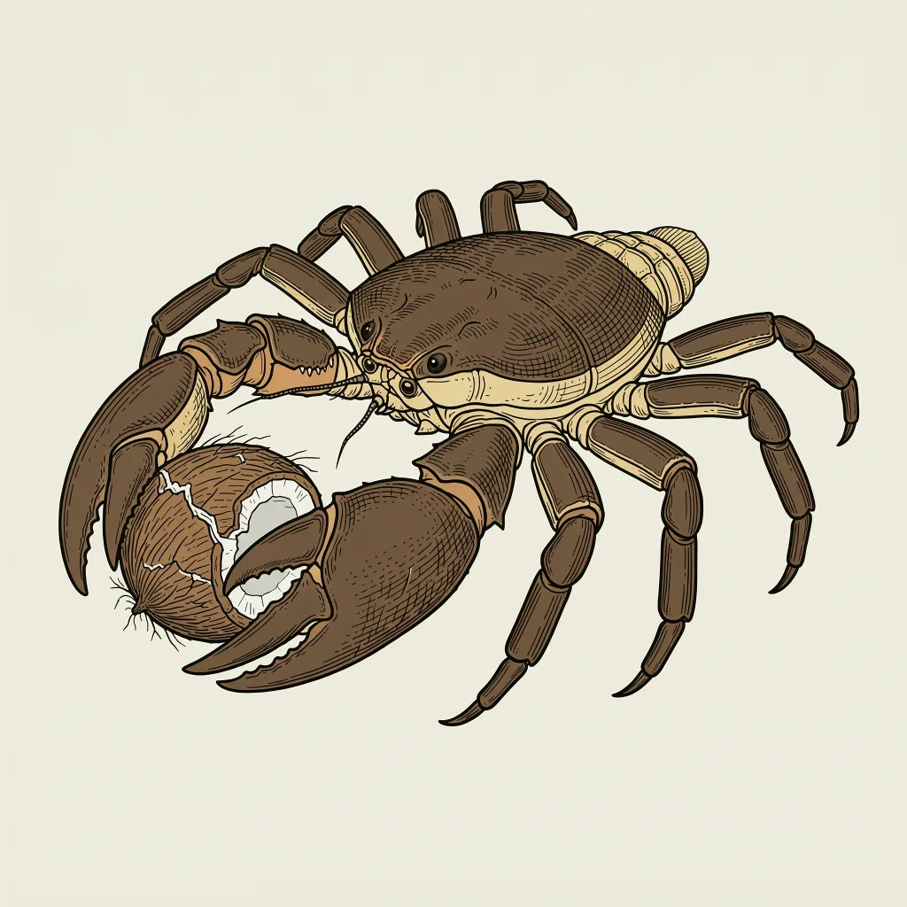

椰子蟹是世界上最大的陆生节肢动物，体重最高可达6公斤，分布于印度洋和太平洋的热带岛屿。它属于陆寄居蟹科，白天躲在海边石缝与珊瑚礁下，夜间觅食，能用螯弄破椰子外壳吃果肉，也善于爬树。因栖息地破坏与人类捕食，IUCN评估为易危。
白天，椰子蟹躲在海边阴凉处的树林、石头和珊瑚礁下面，天黑后才出来觅食。它的分布沿着印度洋和太平洋的热带岛屿铺开，西起桑给巴尔海岸，东至甘比尔群岛和皮特肯群岛，北边到日本南方的伊豆群岛与琉球群岛，在台湾的东海岸、绿岛、兰屿和恒春半岛最为多见。对椰子蟹来说，这样的地方条件很具体：海岸附近有遮阴的植被和石缝，空气湿润，它的鳃才不会干掉。
椰子蟹的名字来自它的一个行为：用螯弄破椰子的外壳，吃里面的果肉。它善于爬树，能爬到树顶觅食，日常食谱还包括地瓜、木瓜、花生和动物尸体。但在不少岛上，这套吃法正变得难以为继：人类也把椰子采收走，岛上的椰子变少。食物不足时，有些椰子蟹会突然转变成猎食者，捕杀红脚鲣鸟、波利尼西亚鼠和一些小型蟹类。一只以开椰子出名的动物，开始动手猎杀活物。
椰子蟹属于寄居蟹一类，但成体已经不背螺壳：腹部退化，不再需要找壳寄居，这让它和其他寄居蟹明显不同。它的呼吸也停在半路：椰子蟹用鳃呼吸，却不能在水里呼吸，鳃必须保持湿润才能工作，所以它反而要爬进海水里润湿鳃。只有在繁殖时，它才真正回到海里，卵在海水中孵化，幼体随洋流漂流，长大后再爬上岸。作为现存最大的陆生节肢动物和被提到的岛屿巨型化实例，它的最重纪录是6公斤，而这条路它只走完了一半。
